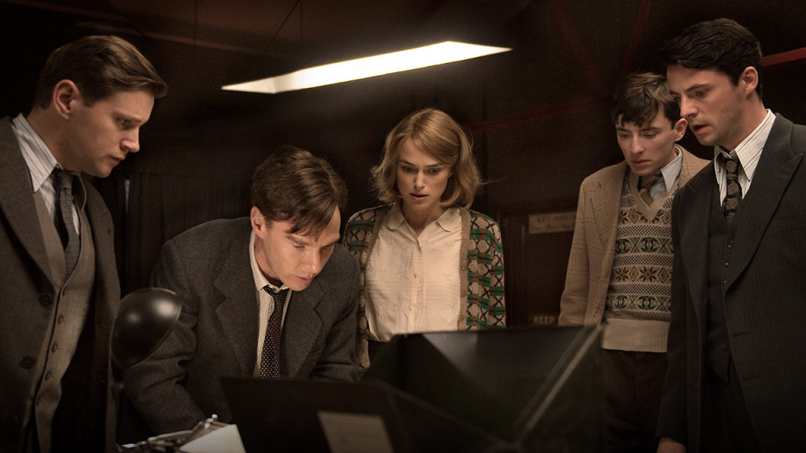
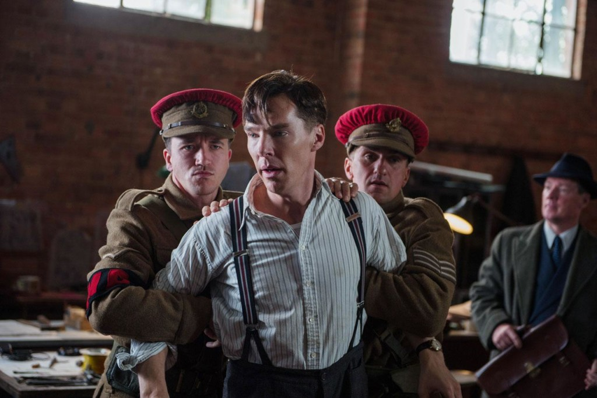

O Jogo da Imitação conta a história do matemático Alan Turing tentando decifrar o conhecido Enigma – uma máquina codificadora, com diversas possibilidades de criptografia, na qual os alemães utilizavam para se comunicar durante a Segunda Guerra Mundial. Sua história é baseada no livro 'Alan Turing: The Enigma', de Andrew Hodges.
A história do filme é dividida em 3 partes principais: Alan em sua adolecência, estudando em um colégio só para garotos, ele começa a ter dúvidas em relação a sua sexualidade; Alan trabalhando para tentar decifrar o código do Enigma, isso durante a Segunda Guerra Mundial; e quando a guerra se finaliza, com Alan contando sua história, contando sobre sua maior criação.
Benedict Cumberbatch (conhecido por fazer o papel de Sherlock Holmer) tem o papel do próprio Alan Turing, e, sinceramente, sua personalidade combinou perfeitamente com o personagem. Alan Turing transmite um ar de fragilidade, Cumberbatch consegue passar isso de uma forma fenomenal. A dificuldade de Turing na hora de se comunicar com as pessoas, ou seja, não conseguem entender o que ele diz e muito menos compreender o que quer fazer, Turing age mais pela lógica, mesmo em coisas simples.
"Seu interesse sempre foi saber se e como é possível construir uma máquina que funcione como um cérebro, que apresente uma espécie de inteligência"

O filme se passa em uma época em que o preconceito era algo forte. É mostrado o machismo e principalmente a homofobia. Joan Clarke é a única mulher do filme que está envolvida no Enigma e Keira Knightley faz este papel com maestria. Sua personagem é esperta, com uma iteligência a se comparar com de Turing. Mesmo tendo muitos limitações por ser mulher, sua trajetória no mundo machista da época é uma história a parte.
Além de Joan Clarke, o grupo de Turing é composto por mais 3 criptógrafos: Hugh Alexander (Matthew Goode), John Cairncross (Allen Leech) e Peter Hilton (Mathew Beard), todos eles com uma mente brilhante. Ao comando do grupo, temos o Alastair Denniston (Charles Dance), personagem de personalidade forte, com um ar vilanesco, Denniston é um personagem marcante (curiosidade, a família do verdadeiro comandante criticou a atuação de Charles Dance, por fazer o personagem 'durão demais').

Conclusão, considero O Jogo da Imitação um ótimo filme, levando em conta os preconteitos da época contra a opção sexual. A forma como ele mostra como as pessoas que são consideradas perfeitas ou maléficas por muitos, serem na verdade seres frágeis, inseguros, imperfeitos. Mostra como as pessoas são complexas, incertas e que o verdadeido enigma são as pessoas ao nosso redor.
“Por trás de todo código há um enigma”.
Nota:
Indicações:
Melhor filme
Melhor ator: Benedict Cumberbatch
Melhor atriz coadjuvante: Keira Knightley
Melhor design de produção
Melhor diretor: Morten Tyldum
Melhor edição
Melhor roteiro adaptado
Melhor trilha sonora
Indicações:
Melhor filme
Melhor ator: Benedict Cumberbatch
Melhor atriz coadjuvante: Keira Knightley
Melhor design de produção
Melhor diretor: Morten Tyldum
Melhor edição
Melhor roteiro adaptado
Melhor trilha sonora